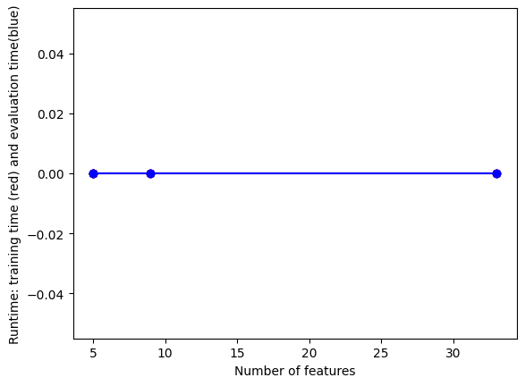

import numpy as np
import pandas as pd
import matplotlib.pyplot as plt
import os
import shutilNaive Bayes
Introduction to Naive Bayes
Bayes Theorem is a mathematical theorem used for predicting a future outcome depending on a collected piece of evidence. More specifically, this theorem calculates “conditional probabilities”, which depicts the probability of an outcome based on a prior condition/ event. The formula for the theorem is:
[P(A|B) = (P(B|A) (P(A))) / P(B)]
In this formula, to predict the probability of event A given event B, we multiply the probability of event B when event A occurs by the probability of event A. We then divide the product by the total probability of event B. With that in mind, Naive Bayes Classifier will be looking at how to classify a data set based on a target variable being given.
There are many variants under the umbrella of Naive Bayes. Included in this bunch are Complement Naive Bayes, Out- of- core Naive Bayes model- fitting, Bernoulli Naive Bayes, Multinomial Naive Bayes, and Gaussian Naive Bayes. When speaking of Gaussian Naive Bayes, this is used for normal distribution expectancies in data. Whereas, Bernoulli Naive Bayes is used for binary variables when classifying. Likewise, Multinomial Naive Bayes is used for multiple variables.
I will be using the Multinomial Bayes Classifier to examine how my text data is classified into positive, negative, and neutral sentiments. I will be using the Multinomial Bayes Classifier again to discern how my self- reporting life satisfaction data is classified.
Text
#OUTPUT FOLDER: START FRESH (DELETE OLD ONE IF EXISTS)
output_dir = "../websitedata/naiveText"
if os.path.exists(output_dir) and os.path.isdir(output_dir):
shutil.rmtree(output_dir)
os.mkdir(output_dir)
teledf = pd.read_csv("../websitedata/television.csv")
teledf["sentiment"] = teledf["compound"].apply(lambda x: "Pos" if x > 0.5 else "Neg" if x < 0.0 else "Neu")
teledf = teledf.dropna()
#print(teledf.isna().sum())
print(teledf) Unnamed: 0 Word neg neu pos compound sentiment
0 0 in 0.0 1.0 0.0 0.0000 Neu
1 1 summer 0.0 1.0 0.0 0.0000 Neu
2 2 1985, 0.0 1.0 0.0 0.0000 Neu
3 3 hawkins, 0.0 1.0 0.0 0.0000 Neu
4 4 newly 0.0 1.0 0.0 0.0000 Neu
.. ... ... ... ... ... ... ...
305 26 love, 0.0 0.0 1.0 0.6369 Pos
306 27 surrounded 0.0 1.0 0.0 0.0000 Neu
307 28 friends 0.0 0.0 1.0 0.4767 Neu
308 29 rivals 0.0 1.0 0.0 0.0000 Neu
309 30 alike. 0.0 1.0 0.0 0.0000 Neu
[310 rows x 7 columns]# use count vectorizer to retrieve one-hot encodings
from sklearn.feature_extraction.text import CountVectorizer
count_vectorizer = CountVectorizer(min_df = 2)
corpus = teledf["Word"].to_list()
# CLEAN UP
tmp=[]
for word in corpus:
tmp1=word.replace(",","")
tmp1=tmp1.replace(".","")
#print(tmp1)
tmp.append(tmp1)
corpus=tmp
print(corpus)
print(len(corpus))['in', 'summer', '1985', 'hawkins', 'newly', 'opened', 'starcourt', 'mall', 'become', 'center', 'attention', 'town', 'causing', 'stores', 'close', 'business', 'due', 'popularity', 'jim', 'hopper', 'disapproves', 'mike', 'wheeler', 'relationship', 'daughter', 'eleven', 'prompting', 'intervene', 'relationship', 'leading', 'eleven', 'friendship', 'max', 'mayfield', 'still', 'recovering', 'bob', 'newby', 'death', 'joyce', 'byers', 'considers', 'moving', 'hawkins', 'children', 'however', 'magnetic', 'disruptions', 'lead', 'believe', 'upside', 'down', 'returned', 'enlists', 'hopper', 'help', 'uncovering', 'truth', 'while', 'mike', 'lucas', 'sinclair', 'attempt', 'repair', 'relationship', 'eleven', 'will', 'byers', 'begins', 'experiencing', 'premonitions', 'upside', 'down', 'despite', 'eleven', 'closing', 'original', 'gate', 'led', 'disappearance', 'he', 'believes', 'mind', 'flayer', 'still', 'alive', 'back', 'hawkins', 'as', 'nancy', 'wheeler', 'jonathan', 'byers', 'investigate', 'effects', 'mind', 'flayer', 'influence', 'dustin', 'henderson', 'steve', 'harrington', 'newcomer', 'robin', 'buckley', 'erica', 'sinclair', 'begin', 'investigating', 'potential', 'soviet', 'infiltration', 'hawkins', 'meanwhile', 'max', 'stepbrother', 'billy', 'hargrove', 'taken', 'mind', 'flayer', 'forced', 'possess', 'citizens', 'hawkins', 'fulfill', 'mind', 'flayer', 'new', 'plan', 'eleven', 'friends', 'choice', 'battle', 'billy', 'possessed', 'victims', 'destroy', 'mind', 'flayer', 'new', 'terrifying', 'form', 'while', 'traveling', 'jamaica', 'new', 'york', 'city', 'montego', 'air', 'flight', '828', 'experiences', 'brief', 'period', 'severe', 'turbulence', 'when', 'land', 'stewart', 'international', 'airport', 'newburgh', 'new', 'york', 'plane', '191', 'passengers', 'crew', 'learn', 'nsa', 'deputy', 'director', 'robert', "'bobby", "'", 'vance', 'five', 'half', 'years', 'passed', 'air', 'time', 'presumed', 'dead', 'as', 'rejoin', 'society', 'passengers', 'must', 'face', 'fact', 'lives—and', 'loved', 'ones—are', 'also', 'begin', 'experience', 'guiding', 'voices', 'visions', 'representing', 'events', 'yet', 'occur', 'referred', "'callings", "'", 'inspired', 'true', 'story', 'total', 'fake', 'under', 'assumed', 'name', 'anna', 'delvey', 'russian-born', 'anna', 'sorokin', 'infiltrated', 'new', 'york', 'high', 'society', 'convincing', 'german', 'socialite', 'heiress', 'massive', 'fortune', 'scheming', 'scamming', 'millions', 'the', 'series', 'life', 'jeffrey', 'dahmer', 'became', 'one', 'notorious', 'serial', 'killers', 'america', 'his', 'murders', 'executed', 'bath', 'township', 'ohio', 'west', 'allis', 'wisconsin', 'milwaukee', 'wisconsin', '1978', '1991', 'the', 'series', 'dramatizes', 'instances', 'dahmer', 'nearly', 'apprehended', 'ultimate', 'conviction', 'death', 'it', 'also', 'explores', 'police', 'incompetence', 'apathy', 'contributed', 'enabling', 'crimes', 'set', 'backdrop', 'regency', 'era', 'eight', 'close-knit', 'siblings', 'noble', 'powerful', 'bridgerton', 'family', '–', 'anthony', 'benedict', 'colin', 'daphne', 'eloise', 'francesca', 'gregory', 'hyacinth', '–', 'navigate', 'london', 'high', 'society', 'search', 'love', 'surrounded', 'friends', 'rivals', 'alike']
310# print(teledf["sentiment"])
y = np.array((teledf["sentiment"]=="Pos").astype(int))
print(y)
print(y.shape)[0 0 0 0 0 0 0 0 0 0 0 0 0 0 0 0 0 0 0 0 0 0 0 0 0 0 0 0 0 0 0 0 0 0 0 0 0
0 0 0 0 0 0 0 0 0 0 0 0 0 0 0 0 0 0 0 0 0 0 0 0 0 0 0 0 0 0 0 0 0 0 0 0 0
0 0 0 0 0 0 0 0 0 0 0 0 0 0 0 0 0 0 0 0 0 0 0 0 0 0 0 0 0 0 0 0 0 0 0 0 0
0 0 0 0 0 0 0 0 0 0 0 0 0 0 0 0 0 0 0 0 0 0 0 0 0 0 0 0 0 0 0 0 0 0 0 0 0
0 0 0 0 0 0 0 0 0 0 0 0 0 0 0 0 0 0 0 0 0 0 0 0 0 0 0 0 0 0 0 0 0 0 0 0 0
0 0 0 0 0 0 0 0 0 1 0 0 0 0 0 0 0 0 0 0 0 0 0 0 0 0 0 0 0 0 0 0 0 0 0 0 0
0 0 0 0 0 0 0 0 0 0 0 0 0 0 0 0 0 0 0 0 0 0 0 0 0 0 0 0 0 0 0 0 0 0 0 0 0
0 0 0 0 0 0 0 0 0 0 0 0 0 0 0 0 0 0 0 0 0 0 0 0 0 0 0 0 0 0 0 0 0 0 0 0 0
0 0 0 0 0 0 0 0 0 1 0 0 0 0]
(310,)# use count vectorizer to retrieve one-hot encodings
from sklearn.feature_extraction.text import CountVectorizer
count_vectorizer = CountVectorizer(min_df = 1)
Xs = count_vectorizer.fit_transform(corpus)
# print(Xs)
print(count_vectorizer.vocabulary_)
x = np.array(Xs.todense())
print(x){'in': 120, 'summer': 228, '1985': 2, 'hawkins': 110, 'newly': 172, 'opened': 180, 'starcourt': 221, 'mall': 151, 'become': 27, 'center': 44, 'attention': 21, 'town': 235, 'causing': 43, 'stores': 226, 'close': 49, 'business': 40, 'due': 73, 'popularity': 188, 'jim': 134, 'hopper': 117, 'disapproves': 69, 'mike': 156, 'wheeler': 250, 'relationship': 200, 'daughter': 60, 'eleven': 77, 'prompting': 195, 'intervene': 128, 'leading': 141, 'friendship': 101, 'max': 153, 'mayfield': 154, 'still': 225, 'recovering': 196, 'bob': 34, 'newby': 170, 'death': 62, 'joyce': 136, 'byers': 41, 'considers': 52, 'moving': 161, 'children': 45, 'however': 118, 'magnetic': 150, 'disruptions': 70, 'lead': 140, 'believe': 30, 'upside': 244, 'down': 71, 'returned': 203, 'enlists': 80, 'help': 113, 'uncovering': 242, 'truth': 239, 'while': 252, 'lucas': 149, 'sinclair': 216, 'attempt': 20, 'repair': 201, 'will': 253, 'begins': 29, 'experiencing': 87, 'premonitions': 193, 'despite': 65, 'closing': 50, 'original': 181, 'gate': 103, 'led': 143, 'disappearance': 68, 'he': 111, 'believes': 31, 'mind': 159, 'flayer': 94, 'alive': 8, 'back': 22, 'as': 18, 'nancy': 165, 'jonathan': 135, 'investigate': 129, 'effects': 75, 'influence': 124, 'dustin': 74, 'henderson': 114, 'steve': 223, 'harrington': 109, 'newcomer': 171, 'robin': 206, 'buckley': 39, 'erica': 82, 'begin': 28, 'investigating': 130, 'potential': 191, 'soviet': 220, 'infiltration': 123, 'meanwhile': 155, 'stepbrother': 222, 'billy': 33, 'hargrove': 108, 'taken': 230, 'forced': 96, 'possess': 189, 'citizens': 47, 'fulfill': 102, 'new': 168, 'plan': 185, 'friends': 100, 'choice': 46, 'battle': 25, 'possessed': 190, 'victims': 246, 'destroy': 66, 'terrifying': 231, 'form': 97, 'traveling': 237, 'jamaica': 132, 'york': 257, 'city': 48, 'montego': 160, 'air': 5, 'flight': 95, '828': 4, 'experiences': 86, 'brief': 38, 'period': 184, 'severe': 214, 'turbulence': 240, 'when': 251, 'land': 139, 'stewart': 224, 'international': 127, 'airport': 6, 'newburgh': 169, 'plane': 186, '191': 0, 'passengers': 183, 'crew': 56, 'learn': 142, 'nsa': 175, 'deputy': 64, 'director': 67, 'robert': 205, 'bobby': 35, 'vance': 245, 'five': 93, 'half': 107, 'years': 255, 'passed': 182, 'time': 233, 'presumed': 194, 'dead': 61, 'rejoin': 199, 'society': 218, 'must': 163, 'face': 89, 'fact': 90, 'lives': 145, 'and': 12, 'loved': 148, 'ones': 179, 'are': 17, 'also': 10, 'experience': 85, 'guiding': 106, 'voices': 248, 'visions': 247, 'representing': 202, 'events': 83, 'yet': 256, 'occur': 176, 'referred': 197, 'callings': 42, 'inspired': 125, 'true': 238, 'story': 227, 'total': 234, 'fake': 91, 'under': 243, 'assumed': 19, 'name': 164, 'anna': 13, 'delvey': 63, 'russian': 207, 'born': 36, 'sorokin': 219, 'infiltrated': 122, 'high': 115, 'convincing': 55, 'german': 104, 'socialite': 217, 'heiress': 112, 'massive': 152, 'fortune': 98, 'scheming': 209, 'scamming': 208, 'millions': 157, 'the': 232, 'series': 212, 'life': 144, 'jeffrey': 133, 'dahmer': 58, 'became': 26, 'one': 178, 'notorious': 174, 'serial': 211, 'killers': 137, 'america': 11, 'his': 116, 'murders': 162, 'executed': 84, 'bath': 24, 'township': 236, 'ohio': 177, 'west': 249, 'allis': 9, 'wisconsin': 254, 'milwaukee': 158, '1978': 1, '1991': 3, 'dramatizes': 72, 'instances': 126, 'nearly': 167, 'apprehended': 16, 'ultimate': 241, 'conviction': 54, 'it': 131, 'explores': 88, 'police': 187, 'incompetence': 121, 'apathy': 15, 'contributed': 53, 'enabling': 79, 'crimes': 57, 'set': 213, 'backdrop': 23, 'regency': 198, 'era': 81, 'eight': 76, 'knit': 138, 'siblings': 215, 'noble': 173, 'powerful': 192, 'bridgerton': 37, 'family': 92, 'anthony': 14, 'benedict': 32, 'colin': 51, 'daphne': 59, 'eloise': 78, 'francesca': 99, 'gregory': 105, 'hyacinth': 119, 'navigate': 166, 'london': 146, 'search': 210, 'love': 147, 'surrounded': 229, 'rivals': 204, 'alike': 7}
[[0 0 0 ... 0 0 0]
[0 0 0 ... 0 0 0]
[0 0 1 ... 0 0 0]
...
[0 0 0 ... 0 0 0]
[0 0 0 ... 0 0 0]
[0 0 0 ... 0 0 0]]import random
N=x.shape[0]; #print("N=",N)
l = [*range(N)] # indices
cut = int(0.8 * N) #80% of the list
random.shuffle(l) # randomize
train_index = l[:cut] # first 80% of shuffled list
test_index = l[cut:] # last 20% of shuffled list
print(train_index[0:10])
print(test_index[0:10])
print(N)[172, 100, 107, 197, 0, 190, 91, 185, 122, 63]
[6, 105, 293, 59, 131, 161, 108, 66, 71, 38]
310# FEATURE SELECTION
from sklearn.naive_bayes import MultinomialNB
from sklearn.metrics import accuracy_score
import time
def train_MNB_model(x, y, train_index, test_index, i_print=False):
if i_print:
print(x.shape, y.shape)
# Split the data using indices
x_train = x[train_index]
y_train = y[train_index].flatten()
x_test = x[test_index]
y_test = y[test_index].flatten()
# Initialize model
model = MultinomialNB()
# Train model
start = time.process_time()
model.fit(x_train, y_train)
time_train = time.process_time() - start
# Label predictions for training and test set
start = time.process_time()
yp_train = model.predict(x_train)
yp_test = model.predict(x_test)
time_eval = time.process_time() - start
acc_train = accuracy_score(y_train, yp_train) * 100
acc_test = accuracy_score(y_test, yp_test) * 100
if i_print:
print(acc_train, acc_test, time_train, time_eval)
return acc_train, acc_test, time_train, time_eval
# Test
(acc_train, acc_test, time_train, time_eval) = train_MNB_model(x, y, train_index, test_index, i_print=True)(310, 258) (310,)
99.59677419354838 98.38709677419355 0.0 0.0x_var=np.var(x,axis=0)
print(np.min(x_var))
print(np.max(x_var))0.0032154006243496364
0.015868886576482784##UTILITY FUNCTION TO INITIALIZE RELEVANT ARRAYS
def initialize_arrays():
global num_features,train_accuracies
global test_accuracies,train_time,eval_time
num_features=[]
train_accuracies=[]
test_accuracies=[]
train_time=[]
eval_time=[]#UTILITY FUNCTION TO SAVE RESULTS
def save_results(path_root):
out=np.transpose(np.array([num_features,train_accuracies,test_accuracies,train_time,eval_time]))
out=pd.DataFrame(out)
out.to_csv(path_root+".csv")# UTILITY FUNCTION TO PLOT RESULTS
def plot_results(path_root):
#PLOT-1
plt.plot(num_features,train_accuracies,'-or')
plt.plot(num_features,test_accuracies,'-ob')
plt.xlabel('Number of features')
plt.ylabel('ACCURACY: Training (blue) and Test (red)')
plt.savefig(path_root+'-1.png')
plt.show()
# #PLOT-2
plt.plot(num_features,train_time,'-or')
plt.plot(num_features,eval_time,'-ob')
plt.xlabel('Number of features')
plt.ylabel('Runtime: training time (red) and evaluation time(blue)')
plt.savefig(path_root+'-2.png')
plt.show()
# #PLOT-3
plt.plot(np.array(test_accuracies),train_time,'-or')
plt.plot(np.array(test_accuracies),eval_time,'-ob')
plt.xlabel('test_accuracies')
plt.ylabel('Runtime: training time (red) and evaluation time (blue)')
plt.savefig(path_root+'-3.png')
plt.show()
# #PLOT-3
plt.plot(num_features,np.array(train_accuracies)-np.array(test_accuracies),'-or')
plt.xlabel('Number of features')
plt.ylabel('train_accuracies-test_accuracies')
plt.savefig(path_root+'-4.png')
plt.show()from sklearn.feature_selection import VarianceThreshold
# DEFINE GRID OF THRESHOLDS
num_thresholds=10
thresholds=np.linspace(np.min(x_var),np.max(x_var),num_thresholds)
#DOESN"T WORK WELL WITH EDGE VALUES
thresholds=thresholds[1:-2]; #print(thresholds)
# INITIALIZE ARRAYS
initialize_arrays()
# SEARCH FOR OPTIMAL THRESHOLD
for THRESHOLD in thresholds:
feature_selector = VarianceThreshold(threshold=THRESHOLD)
xtmp=feature_selector.fit_transform(x)
print("THRESHOLD =",THRESHOLD, xtmp.shape[1])
(acc_train,acc_test,time_train,time_eval)=train_MNB_model(xtmp,y,train_index, test_index, i_print=False)
#RECORD
num_features.append(xtmp.shape[1])
train_accuracies.append(acc_train)
test_accuracies.append(acc_test)
train_time.append(time_train)
eval_time.append(time_eval)THRESHOLD = 0.004621343507919986 33
THRESHOLD = 0.006027286391490336 33
THRESHOLD = 0.0074332292750606856 9
THRESHOLD = 0.008839172158631035 9
THRESHOLD = 0.010245115042201386 5
THRESHOLD = 0.011651057925771735 5
THRESHOLD = 0.013057000809342086 5# CHECK RESULTS
save_results(output_dir+"/variance_threshold")
plot_results(output_dir+"/variance_threshold")
Record
import numpy as np
import pandas as pd
import matplotlib.pyplot as plt
import os
import shutil
import requests
import json
import re
#import pycountry
from sklearn.feature_extraction.text import CountVectorizer
from sklearn.naive_bayes import MultinomialNB
from sklearn.metrics import accuracy_score
import timeoutput_dir = output_dir = "../websitedata/naiveOutput"
if os.path.exists(output_dir) and os.path.isdir(output_dir):
shutil.rmtree(output_dir)
os.mkdir(output_dir)
happygdp = pd.read_csv("../websitedata/happy_py.csv")
happygdp["GDP"] = happygdp["GDP"].str.replace(',', '').astype(float)
happygdp = happygdp.rename(columns={"Unnamed: 0": "Country"})
# Score Categories: 0-4.0 = "Low"; 4.1 - 7.0 = "Moderate"; 7.1 & above = "High"
happygdp["Happiness"] = pd.cut(happygdp["Score"], bins=[0, 4.0, 7.0, 10],
labels=["Low", "Moderate", "High"])
Happydf = happygdp.drop(["Score", "Happiness", "Entity", "Code"], axis=1)
print(Happydf) Country GDP
0 1 363.7
1 597 6802.8
2 857 4273.9
3 2133 13686.0
4 2393 7014.2
.. ... ...
132 56105 2255.2
133 56816 15975.7
134 57076 4163.5
135 58181 1487.9
136 58442 1267.0
[137 rows x 2 columns]x = Happydf.to_numpy()
y = happygdp["Happiness"]
y=np.array(y)
print(x.shape, y.shape)(137, 2) (137,)import random
N=x.shape[0]
l = [*range(N)] # indices
cut = int(0.8 * N) #80% of the list
random.shuffle(l) # randomize
train_index = l[:cut] # first 80% of shuffled list
test_index = l[cut:] # last 20% of shuffled list
print(train_index[0:10])
print(test_index[0:10])[118, 54, 0, 39, 68, 103, 93, 1, 61, 100]
[85, 67, 87, 43, 2, 97, 108, 14, 25, 33]
def train_MNB_model(X,Y,i_print=False):
if(i_print):
print(X.shape,Y.shape)
#SPLIT
x_train=X[train_index]
y_train=Y[train_index].flatten()
x_test=X[test_index]
y_test=Y[test_index].flatten()
# INITIALIZE MODEL
model = MultinomialNB()
# TRAIN MODEL
start = time.process_time()
model.fit(x_train,y_train)
time_train=time.process_time() - start
# LABEL PREDICTIONS FOR TRAINING AND TEST SET
start = time.process_time()
yp_train = model.predict(x_train)
yp_test = model.predict(x_test)
time_eval=time.process_time() - start
acc_train= accuracy_score(y_train, yp_train)*100
acc_test= accuracy_score(y_test, yp_test)*100
if(i_print):
print(acc_train,acc_test,time_train,time_eval)
return (acc_train,acc_test,time_train,time_eval)
#TEST
print(type(x),type(y))
print(x.shape,y.shape)
(acc_train,acc_test,time_train,time_eval)=train_MNB_model(x,y,i_print=True)<class 'numpy.ndarray'> <class 'numpy.ndarray'>
(137, 2) (137,)
(137, 2) (137,)
41.284403669724774 60.71428571428571 0.0 0.0# FEATURE SELECTION FOR RECORD DATA
from sklearn.feature_selection import VarianceThreshold
##UTILITY FUNCTION TO INITIALIZE RELEVANT ARRAYS
def initialize_arrays():
global num_features,train_accuracies
global test_accuracies,train_time,eval_time
num_features=[]
train_accuracies=[]
test_accuracies=[]
train_time=[]
eval_time=[]
x_var=np.var(x,axis=0)
print(np.min(x_var))
print(np.max(x_var))
# DEFINE GRID OF THRESHOLDS
num_thresholds=30
thresholds=np.linspace(np.min(x_var),np.max(x_var),num_thresholds)
#DOESN"T WORK WELL WITH EDGE VALUES
thresholds=thresholds[1:-2]; #print(thresholds)
# INITIALIZE ARRAYS
initialize_arrays()
# SEARCH FOR OPTIMAL THRESHOLD
for THRESHOLD in thresholds:
feature_selector = VarianceThreshold(threshold=THRESHOLD)
xtmp=feature_selector.fit_transform(x)
print("THRESHOLD =",THRESHOLD, xtmp.shape[1])
(acc_train,acc_test,time_train,time_eval)=train_MNB_model(xtmp,y,i_print=False)
#RECORD
num_features.append(xtmp.shape[1])
train_accuracies.append(acc_train)
test_accuracies.append(acc_test)
train_time.append(time_train)
eval_time.append(time_eval)267473890.76700944
595615971.6199687
THRESHOLD = 278789134.9343529 1
THRESHOLD = 290104379.10169625 1
THRESHOLD = 301419623.2690397 1
THRESHOLD = 312734867.4363831 1
THRESHOLD = 324050111.60372657 1
THRESHOLD = 335365355.77106994 1
THRESHOLD = 346680599.9384134 1
THRESHOLD = 357995844.1057568 1
THRESHOLD = 369311088.27310026 1
THRESHOLD = 380626332.44044363 1
THRESHOLD = 391941576.6077871 1
THRESHOLD = 403256820.7751305 1
THRESHOLD = 414572064.9424739 1
THRESHOLD = 425887309.1098173 1
THRESHOLD = 437202553.27716076 1
THRESHOLD = 448517797.44450414 1
THRESHOLD = 459833041.6118476 1
THRESHOLD = 471148285.779191 1
THRESHOLD = 482463529.9465344 1
THRESHOLD = 493778774.1138779 1
THRESHOLD = 505094018.2812213 1
THRESHOLD = 516409262.4485647 1
THRESHOLD = 527724506.61590815 1
THRESHOLD = 539039750.7832515 1
THRESHOLD = 550354994.9505949 1
THRESHOLD = 561670239.1179384 1
THRESHOLD = 572985483.2852818 1#UTILITY FUNCTION TO SAVE RESULTS
def save_results(path_root):
out=np.transpose(np.array([num_features,train_accuracies,test_accuracies,train_time,eval_time]))
out=pd.DataFrame(out)
out.to_csv(path_root+".csv")def plot_results(path_root):
#PLOT-1
plt.plot(num_features,train_accuracies,'-or')
plt.plot(num_features,test_accuracies,'-ob')
plt.xlabel('Number of features')
plt.ylabel('ACCURACY: Training (blue) and Test (red)')
plt.savefig(path_root+'-1.png')
plt.show()
# #PLOT-2
plt.plot(num_features,train_time,'-or')
plt.plot(num_features,eval_time,'-ob')
plt.xlabel('Number of features')
plt.ylabel('Runtime: training time (red) and evaluation time(blue)')
plt.savefig(path_root+'-2.png')
plt.show()
# #PLOT-3
plt.plot(np.array(test_accuracies),train_time,'-or')
plt.plot(np.array(test_accuracies),eval_time,'-ob')
plt.xlabel('test_accuracies')
plt.ylabel('Runtime: training time (red) and evaluation time (blue)')
plt.savefig(path_root+'-3.png')
plt.show()
# #PLOT-3
plt.plot(num_features,np.array(train_accuracies)-np.array(test_accuracies),'-or')
plt.xlabel('Number of features')
plt.ylabel('train_accuracies-test_accuracies')
plt.savefig(path_root+'-4.png')
plt.show()# CHECK RESULTS
save_results(output_dir+"/variance_threshold")
plot_results(output_dir+"/variance_threshold")Since my text and record data didn’t have many variables, the hyperparameter tuning was not as useful. Due to my data’s size, the data is also subject to overfitting.